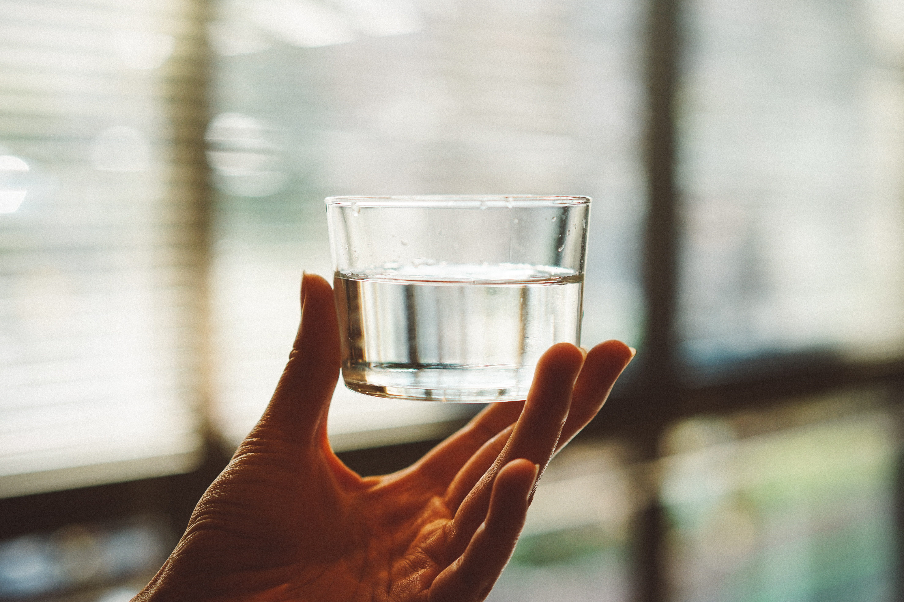

Pollutants in the ocean can accumulate in seafood that humans consume, leading to ingestion of harmful substances like heavy metals, microplastics, and toxins, causing health problems.

Coastal communities that rely on ocean water for drinking or irrigation can experience contaminated water due to ocean pollution, affecting public health and agriculture.

Polluted beaches and waters can pose health risks for swimmers, surfers, and beachgoers due to exposure to bacteria, pathogens, and toxic substances.

Industries such as fishing, tourism, and coastal real estate can suffer economic losses due to polluted waters and damaged marine ecosystems, affecting livelihoods and regional economies.

Ocean pollution harms marine life and ecosystems, disrupting the food chain and causing imbalances that can impact the availability of seafood and marine resources.
Ocean pollution contributes to climate change by affecting ocean temperature, carbon absorption, and ocean acidification, which in turn affect global climate patterns and sea levels.
Chemical pollutants in the ocean can evaporate and enter the atmosphere, potentially contaminating rainfall and agricultural lands, leading to unintended exposure to toxins.
The degradation of natural beauty, loss of marine life, and decline in recreational opportunities due to ocean pollution can negatively affect human mental well-being.
Airborne particles from ocean pollution, such as aerosols and organic matter, can contribute to poor air quality in coastal areas, affecting respiratory health in nearby populations.
As ocean pollution affects fish populations and marine resources, it can lead to competition and conflicts among different user groups, including fishermen, industries, and governments, over limited resources.

Ocean pollution can exacerbate coastal erosion and damage infrastructure, affecting homes, businesses, and essential facilities, which can lead to financial losses and displacement of communities.
Ocean pollution can hinder scientific research efforts, making it challenging to study marine ecosystems and understand their complex interactions, which can impede our ability to address environmental issues effectively.